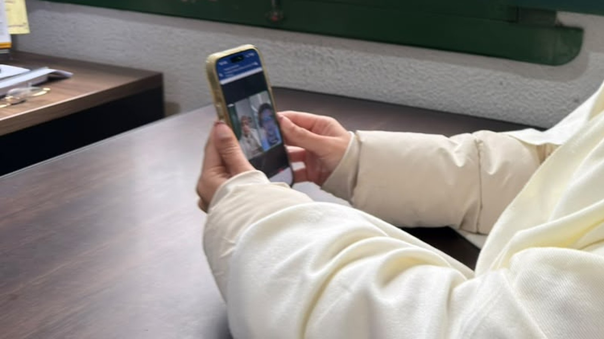

Itapema · Saúde
Itapema · SaúdeItapema recebe as equipes de saúde dos 11 municípios da Foz do Rio Itajaí em dois dias de trabalho
O mesmo consórcio regional que aparece na compra do Saúde 24h.
O atendimento por telemedicina funciona todos os dias, a qualquer hora. Na segunda-feira o Hospital Santo Antônio ativa 10 leitos de UTI, com custeio do Governo do Estado.
Em 30 segundos · Modo de Leitura, formato original Santa Informa
Itapema colocou no ar o Saúde 24h, atendimento médico por telemedicina.
Funciona 24 horas por dia, sete dias por semana, inclusive sábado, domingo e feriado.
O acesso é pelo 0800 333 7973, por ligação ou por WhatsApp.
O paciente passa por uma avaliação inicial e é encaminhado conforme os sintomas.
Caso que dá para resolver de longe fica no atendimento virtual. Caso que precisa de exame vai para a unidade certa.
O serviço foi comprado pelo Município pelo CIS-AMFRI, o consórcio de saúde da Foz do Rio Itajaí.
Quem atende é a TopMed, empresa catarinense de saúde digital.
Um aplicativo próprio entra numa etapa seguinte, sem data divulgada.
Na segunda-feira o Hospital Santo Antônio ativa 10 leitos de UTI na rede estadual.
Poder PúblicoPublicada em Redação Santa Informa

Itapema ganhou uma porta de entrada nova na saúde pública. O Saúde 24h oferece atendimento médico por telemedicina 24 horas por dia, sete dias por semana, e o morador consegue orientação sem sair de casa. O contato é pelo 0800 333 7973, por ligação telefônica ou por WhatsApp. A informação é da Prefeitura de Itapema.
Diante de um problema de saúde, a pessoa liga ou manda mensagem e passa por uma avaliação inicial. A partir dos sintomas que ela descreve, é feita a triagem e o encaminhamento. O que dá para resolver de longe fica no atendimento virtual mesmo. O que precisa de exame, de toque ou de procedimento gera a orientação de procurar o serviço adequado da rede. A ideia é que ninguém saia de casa às três da manhã sem saber para onde ir.
O serviço foi adquirido pelo Município por meio do Consórcio Intermunicipal de Saúde da Região da Foz do Rio Itajaí, o CIS-AMFRI. Consórcio é o arranjo em que várias prefeituras contratam juntas um mesmo serviço. Quem faz o atendimento é a TopMed, empresa catarinense de saúde digital que já presta serviço para o setor público. A Prefeitura diz que uma etapa seguinte vai trazer um aplicativo próprio, divulgado nos canais oficiais quando estiver pronto.
Para o secretário de Saúde, Fabrício Lazzari, o Fafá, o Saúde 24h também organiza a fila. "Muitas situações podem receber uma primeira avaliação sem que o paciente precise se deslocar até uma unidade. Com a telemedicina, conseguimos dar essa resposta 24 horas por dia e direcionar melhor quem precisa do atendimento presencial", disse.
No mesmo anúncio veio a segunda parte. O Hospital Santo Antônio abre 10 leitos de UTI na próxima segunda-feira, com a presença do secretário de Estado da Saúde, Diogo Demarchi Silva. Os leitos já pertenciam à estrutura do hospital e foram habilitados para integrar a rede estadual, então passam a receber pacientes encaminhados pela Central de Regulação do Governo de Santa Catarina, de qualquer município. Todos estão preparados para atender quem precisa de isolamento. O custeio dos 10 leitos fica com o Estado.
Itapema tem UBS com horário fixo e uma população que dobra na temporada. Fora do horário comercial, o caminho hoje costuma ser a emergência, que enche de caso simples e atrasa o caso grave. Um canal que resolve orientação por telefone alivia esse aperto, se funcionar como está no papel. E leito de UTI habilitado no Estado, na cidade, poupa transferência de ambulância para Itajaí ou Balneário Camboriú na hora em que o tempo conta.
O resumo de 30 segundos está no topo e a versão completa é o texto acima. Aqui ficam as três leituras da casa sobre o mesmo assunto.
Clara, a otimista
Ficar doente de madrugada em cidade de praia é aflição conhecida. A farmácia fechou, a UBS abre só de manhã e o jeito é ir para a emergência sem saber se o caso é grave. Ter um número que atende a qualquer hora muda essa conta.
E o telefone é gratuito, funciona no WhatsApp e não pede aplicativo novo. Quem tem celular simples consegue usar. Somando os 10 leitos de UTI que abrem na segunda, foi uma semana boa para a saúde da cidade.
Seu Prudêncio, o criterioso
Merece atenção o que ainda não foi dito. Não saiu o valor do contrato, nem o prazo, nem a capacidade diária de atendimento. Serviço de telemedicina bom e serviço de telemedicina ruim atendem pelo mesmo 0800, e a diferença aparece no tempo de espera na linha.
Uma sugestão útil para a Secretaria: publicar mês a mês quantas chamadas entraram, quantas foram resolvidas de forma remota e quantas viraram encaminhamento presencial. Com esse número na mesa, dá para saber se a emergência do hospital de fato aliviou, que é a promessa do serviço.
Vale acompanhar também se o médico da telemedicina pode receitar e pedir exame, porque sem isso a consulta vira só triagem. Dito isso, a decisão faz sentido. Comprar pelo consórcio sai mais barato que contratar sozinho, e habilitar no Estado leito que já existia no Santo Antônio é aproveitar estrutura parada com dinheiro de fora do caixa municipal. Nos dois casos, a Prefeitura escolheu bem o caminho.
Caco, o sarcástico
Enfim um 0800 que atende de madrugada e não é para vender consórcio de carro.
A parte boa é que dá para consultar de pijama, de baixo do cobertor, sem enfrentar fila. A parte estranha é que agora o médico vai ver o quarto da gente. Arruma a cama antes.
E dez leitos de UTI abertos em Itapema pagos pelo Estado. É a primeira vez em muito tempo que a conta chega para outro.
Fontes: Prefeitura de Itapema, publicação da Imprensa PMI em 26 de agosto de 2026, com o nome do serviço Saúde 24h, o funcionamento por telemedicina 24 horas por dia e sete dias por semana, o número 0800 333 7973 por ligação e WhatsApp, a triagem por sintomas e o encaminhamento, a aquisição pelo Consórcio Intermunicipal de Saúde da Região da Foz do Rio Itajaí (CIS-AMFRI), o atendimento pela TopMed, a etapa seguinte com aplicativo próprio, as declarações do secretário de Saúde Fabrício Lazzari (Fafá), a ativação de 10 leitos de UTI no Hospital Santo Antônio na próxima segunda-feira com presença do secretário de Estado da Saúde Diogo Demarchi Silva, a habilitação dos leitos na rede estadual, o preparo para isolamento, o encaminhamento pela Central de Regulação e o custeio assumido pelo Governo do Estado.
Itapema · SaúdeO mesmo consórcio regional que aparece na compra do Saúde 24h.
 Itapema · Segurança
Itapema · SegurançaOutra frente recente da Prefeitura de Itapema no atendimento ao morador.
Outro programa municipal que começou nesta semana na cidade.